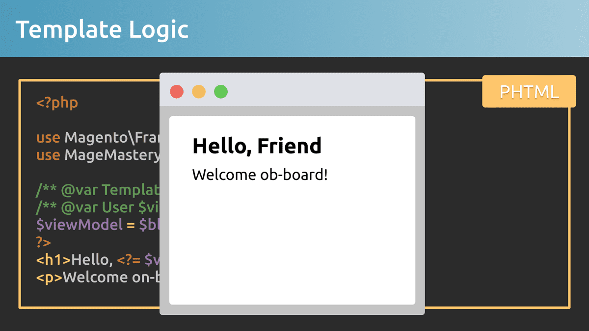

A view model is a class that allows you to pass data and additional functionality from a place that represents a business logic to a template. It also can provide data loaded from an entity, for example, a product. The view model allows developers to simplify templates and block classes by providing separate classes that are easier to test and maintain.
Модель представления - это класс, который позволяет передавать данные и дополнительные функции из места, представляющего бизнес-логику, в шаблон. Он также может предоставлять данные, загруженные из объекта, например продукта. Модель представления позволяет разработчикам упростить шаблоны и классы блоков, предоставляя отдельные классы, которые легче тестировать и поддерживать.
The View Model class can hold calculation logic, data lookups, object fetches and pass it directly to a template, so the template’s logic can be as simple as possible.
Класс View Model может содержать логику вычислений, поиск данных, выборку объектов и передавать их непосредственно в шаблон, поэтому логика шаблона может быть максимально простой.
View Models usually located in the module’s directory called ViewModel. The location of view model classes, however, is not limited to a ViewModel directory. You can create as many view models as needed in order to provide a required set of separate classes with its own logic.
Просмотр моделей обычно находится в каталоге модуля под названием ViewModel. Однако расположение классов модели представления не ограничивается каталогом ViewModel. Вы можете создать столько моделей представлений, сколько необходимо, чтобы предоставить необходимый набор отдельных классов со своей собственной логикой.
Lesson Overview
Обзор урока
In this lesson we are going to learn the following:
В этом уроке мы узнаем следующее:
What is a View Model?
Что такое модель просмотра?
How to use View Model?
Как использовать модель просмотра?
When to use a View Model?
Когда использовать модель представления?
View Model Example
Посмотр примера модели
The concept of a view model is simple, and at the same time powerful. Let’s jump into the example to better understand the creation flow. In order to implement a view model, we have to create a PHP class in ViewModel directory.
Концепция модели представления проста и в то же время эффективна. Давайте рассмотрим этот пример, чтобы лучше понять процесс создания. Чтобы реализовать модель представления, мы должны создать класс PHP в каталоге ViewModel.
class ProductViewModel
{private$resource;publicfunction__construct(Resource$resource){$this->resource=$resource;}publicfunctiongetProductBySku(string$sku):ProductInterface{return$this->resource->load($sku, ‘sku’);}}
The only requirement is that the ProductViewModel class must implement Magento\Framework\View\Element\Block\ArgumentInterface. Let's add it.
Единственное требование - класс ProductViewModel должен реализовывать Magento\Framework\View\Element\Block\ArgumentInterface. Добавим.
Once the view model class is created, we have to add it to a layout XML file. So that during layout rendering, it will find the view model class, instantiate it and add into the pool of a Block class dependencies.
После создания класса модели представления мы должны добавить его в XML-файл макета. Так что во время рендеринга макета он найдет класс модели представления, создаст его экземпляр и добавит в пул зависимостей класса блока.
A Layout XML file should be located in the view/frontend/layout directory of the module. In the Template and Layout rendering lesson, we’ve discussed different layout configuration areas. Make sure to check the lesson to better understand frontend and adminhtml directory locations for layout xml files.
XML-файл макета должен находиться в каталоге модуля view/frontend/layout. На уроке рендеринга шаблонов и макетов мы обсудили различные области конфигурации макета. Обязательно ознакомьтесь с уроком, чтобы лучше понять расположение каталогов frontend и adminhtml для макетов xml-файлов.
Inside the layout file, we have to add new node in the and. The two attributes should be added to the node, the name of the view model variable and its type, the type should be always set to an object since we pass a class name that has to be initiated as a view model.
Внутри файла макета мы должны добавить новый узел в файлы и. К узлу должны быть добавлены два атрибута: имя переменной модели представления и ее тип, тип всегда должен быть установлен для объекта, поскольку мы передаем имя класса, который должен быть инициирован как модель представления.
From the example above, a "block.name" can be a name of a block, where we want to add a View Model class.
В приведенном выше примере «block.name» может быть именем блока, в который мы хотим добавить класс модели представления.
Inside the node we have to provide the full class name of the view model. Remember, all objects that are injected to block arguments as view models should implement ArgumentInterface interface.
Внутри узла мы должны указать полное имя класса модели представления. Помните, что все объекты, которые вводятся для блокировки аргументов в качестве моделей представления, должны реализовывать интерфейс ArgumentInterface.
Finally, the template of the block to which we’ve added the view model class can get access to the view model. The view model object is passed as an argument of the Template object. It can be accessed via the getData() method by providing the name of the argument we’ve provided in the layout XML file.
Наконец, шаблон блока, в который мы добавили класс модели представления, может получить доступ к модели представления. Объект модели представления передается как аргумент объекта Template. Доступ к нему можно получить с помощью метода getData(), указав имя аргумента, которое мы предоставили в XML-файле макета.
And as a result, the data provided from the view model class is rendered by a template.
И в результате данные, предоставленные из класса модели представления, отображаются с помощью шаблона.

View Model Checklist
Просмотреть контрольный список модели
Let’s recap what we need to create and use a view model.
Подведем итоги, что нам нужно для создания и использования модели представления.
Create a PHP class
Создать класс PHP
Add an ArgumentInterface
Добавить ArgumentInterface
Add a PHP Class into a layout xml
Добавить класс PHP в макет xml
Retrieve a View Model in a template
Получить модель представления в шаблоне
Use View Model public methods
Использовать общедоступные методы модели просмотра
When to use a View Model?
Когда использовать модель представления?
A view model should be used every time you have to pass data from storage or the other object to a template for rendering. It includes calculation logic, data lookups, object fetches and so on.
Модель представления следует использовать каждый раз, когда вам нужно передать данные из хранилища или другого объекта в шаблон для визуализации. Он включает в себя логику вычислений, поиск данных, выборку объектов и так далее.
A view model has to be used instead of a block, so your code will be less dependent on block changes in the Magento 2 framework.
Вместо блока должна использоваться модель представления, поэтому ваш код будет меньше зависеть от изменений блоков в фреймворке Magento 2.
##Conclusion A view model in Magento 2 is a powerful mechanism that allows us to represent and provide data ready for rendering in a template. It provides a simple tool that is recommended to use every time a UI customization should be added.
## Заключение Модель представления в Magento 2 - это мощный механизм, который позволяет нам представлять и предоставлять данные, готовые для рендеринга, в шаблоне. Он предоставляет простой инструмент, который рекомендуется использовать каждый раз, когда необходимо добавить настройку пользовательского интерфейса.